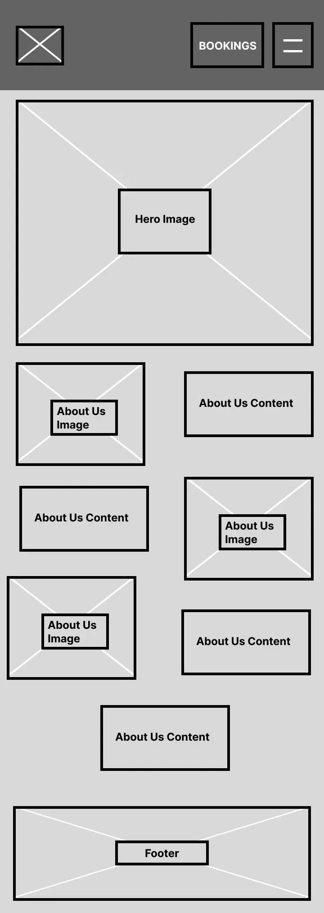
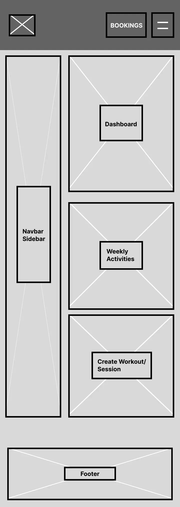
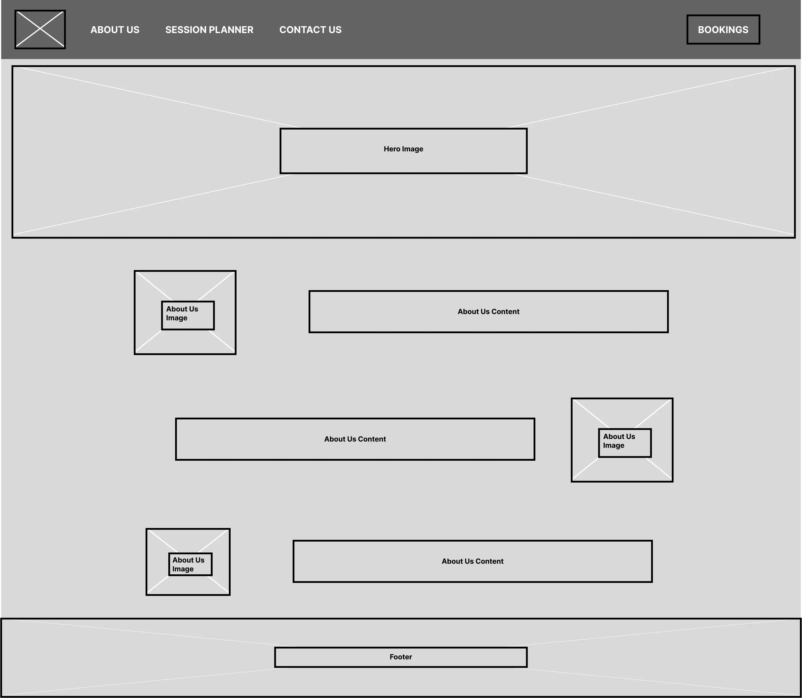
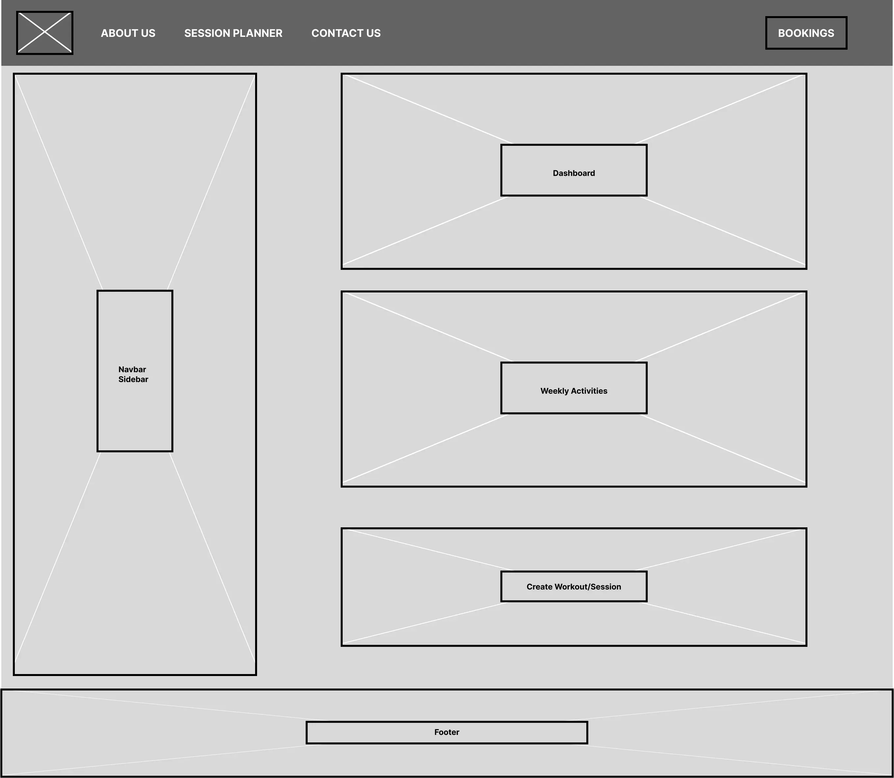

Project Overview

The goal of this project was to design and develop a Gym Planner web application that helps users organise and track their workouts in a clear and structured way. The application focuses on improving the workout planning experience by providing a clean interface where users can plan training sessions, record exercises, and monitor progress.
The project followed a user-centred UX process, beginning with research and ideation before moving through prototyping, development, and testing. The aim was to create a clean, accessible, and responsive tool that supports gym users in maintaining consistent training routines.
View ProjectServices Used
Each tool served a defined role across the design and development workflow.
Understanding The Problem
Many gym users rely on scattered notes, spreadsheets, or memory to track workouts, making it difficult to maintain consistent training plans and monitor progress over time.
This project aimed to solve that problem by designing a centralised workout planning interface where users can:
Aims of the user
- Organise workout routines
- Record exercises and sets
- Track progress over time
The design focused on simplicity, usability, and clarity, ensuring the platform is easy to use for both beginner and experienced gym users.
Research & Inspiration
Desk research and competitor analysis were conducted on existing workout and fitness platforms to identify effective design patterns and common usability features.
Example reference platforms included fitness workout planning tools, online workout libraries, and gym progress tracking platforms.
Analysis Observed
- Clean and minimal user interfaces
- Structured workout logging systems
- Clear navigation and section hierarchy
- Visual separation between exercises and routines
- Mobile-friendly layouts for gym use
Decisions Informed
- Single dashboard layout for quick access to workouts
- Clear section structures for planning and tracking
- Consistent typography and spacing
- Minimal interface distractions
- Mobile-friendly layout for quick gym access


User Persona
To better understand potential users, a persona was created based on common gym-goer behaviours and motivations.

Designing with Alex in mind helped ensure the Gym Planner focused on simple navigation, quick workout logging, and clear progress tracking for a better user experience.
Ideation — Crazy 8's
Multiple layout concepts were explored using the Crazy 8's ideation method, allowing a rapid brainstorming of interface layouts and feature placements.


Low-Fidelity Wireframes
Low-fidelity wireframes were created in Figma to test the overall structure of the application across both mobile and desktop viewports.
📱 Mobile



High-Fidelity Prototype
A high-fidelity prototype was developed to refine the final interface design and simulate the final user experience, validating colour, typography, spacing, and layout before development.


User Testing
User testing was carried out to identify pain points of the developed, high-fidelity prototype, carrying out a testing workshop with 3 participants.
Identified Improvements
- Added an "Enter Email" field to allow booking details to be sent without requiring user login
- Standardised layout formatting, including converting all capitalised "AM" values to "am" for consistency
- Increased the font size of phone and email in the footer and repositioned them to improve visibility and readability
- Updated navigation so sub-layer pages for "My Workouts" and "My Sessions" return to their original parent page
- Updated typography by changing "Create Workout" to "Add Workout" for clearer user context
- Improved typography and clarity for data selection during the workout creation process
- Removed drag iconography from created sessions to simplify the interface
- Updated the hero image to better reflect the context of a gym journal planner
- Added a confirmation pop-up for deleting sessions in "My Sessions"
- Enabled person name selection within the interface
Front-End Development
Implemented using semantic front-end technologies, following accessibility regulations.
- HTML5Semantic structure, ARIA
- CSS3Style, grid
- JavaScriptScroll, Navigation
- Semantic HTML
Heading hierarchy and roles tags for screen reader support.
- Keyboard Navigation
Full Tab navigation.
- Image Alt Text
Descriptive alt attributes on all images.
- WCAG AA/AAA
All focus and colour pairs tested and verified.
<!DOCTYPE html>
<html lang="en">
<head>
<meta charset="UTF-8">
<meta name="viewport" content="width=device-width, initial-scale=1.0">
<title>Gym Planner</title>
<meta name="description" content="Plan and track your gym workouts with GymPlanner. Build personalised sessions, schedule your week, and book personal trainers.">
<link rel="stylesheet" href="css/style.css">
<link rel="stylesheet" href="css/grid.css">
<link rel="preload" as="image" href="images/hero_image_mobile.png" media="(max-width: 768px)" fetchpriority="high">
<link rel="preload" as="image" href="images/hero_image_container.png" media="(min-width: 769px)" fetchpriority="high">
</head>
<body>
<header>
<nav class="site-nav" aria-label="Main navigation">
<a href="#home" class="site-nav__logo" aria-label="GymPlanner home">
<img class="logo" src="images/logo.png" alt="GymPlanner logo" width="95" height="62">
</a>
<ul class="site-nav__links">
<li><a href="#home">Home</a></li>
<li><a href="#about">About Us</a></li>
<li><a href="session_planner.html">Session Planner</a></li>
<li><a href="#footer">Contact Us</a></li>
</ul>
<div class="site-nav__right">
<a href="bookings.html" class="btn-bookings">Bookings</a>
<button id="hamburger" class="btn-hamburger"
aria-controls="mobileMenu"
aria-expanded="false"
aria-label="Open navigation menu">☰</button>
</div>
</nav>
<nav id="mobileMenu" class="mobile-menu"
role="dialog" aria-modal="true" aria-label="Mobile navigation">
<ul class="mobile-menu__list">
<li><a href="#home">Home</a></li>
<li><a href="#about">About Us</a></li>
<li><a href="session_planner.html">Session Planner</a></li>
<li><a href="#footer">Contact Us</a></li>
</ul>
</nav>
</header>
<section class="hero" id="home" aria-label="Hero">
<picture>
<source srcset="images/hero_image_mobile.png" media="(max-width: 768px)">
<img class="hero__img"
src="images/hero_image_container.png"
alt="GymPlanner workout planning preview"
width="1905" height="1092"
fetchpriority="high" decoding="async">
</picture>
<div class="hero__content">
<h1 class="hero__title">Plan smarter. Train harder.</h1>
<p class="hero__sub">Build and follow personalised workouts,<br>
track your progress, and see results.</p>
<a href="session_planner.html" class="hero__cta">Get Started</a>
</div>
</section>
<section class="about" id="about" aria-label="About Us">
<article class="about__row about__row--1">
<img class="about__deco" src="images/mini_bars.png"
alt="" aria-hidden="true" width="95" height="95" loading="lazy">
<div class="about__text-block">
<p>We created this gym journal to make fitness
tracking simple, flexible, and effective.</p>
</div>
</article>
<div class="about__headline-row">
<h2 class="about__headline">ALL IN ONE PLACE!</h2>
</div>
<footer class="about__closing">
<p>Your goals. Your journey. Your journal.</p>
</footer>
</section>
<footer class="site-footer" id="footer">
<div class="footer-inner">
<address class="footer-contact">
<span>Phone: <a href="tel:+441234567">+44 1234 567</a></span>
<span>Email: <a href="mailto:gymplanner@gmail.com">
gymplanner@gmail.com</a></span>
</address>
<small>© 2025 Gym Planner</small>
</div>
</footer>
<script src="js/hamburger.js" defer></script>
<script src="js/about.js" defer></script>
</body>
</html>Performance Optimisation
Lighthouse audits identified large image assets as the primary bottleneck. Two targeted fixes resolved the issues.
- 80PERFORMANCE
- 100ACCESSIBILITY
- 100BEST PRACTICES
- 100SEO
Image Optimisation
Converting to WebP reduced file sizes significantly while maintaining quality and preserving transparent backgrounds.
Animation Simplification
Added a meta description tag to improve search engine optimisation to provide an overview of the purpose of the page.
BEFORE

AFTER

Evaluation and Testing
Accessibility validated against WCAG standards using colour contrast tools.


Version Control
Development tracked with Git throughout with regular commits provides a clean, documented record of progress.
- Mar 16, 2026
- Merge branch 'main' of https://github.com/BenjaminDThomas/gym_planner
- alter image reference links corrected
- Mar 15, 2026
- Delete design/sketches/craz8(1).jpeg ✓
- Delete design/sketches/craz8(2).jpeg ✓
- updated sketches with corrupted files ✓
- Mar 6, 2026
- Merge branch 'main' of https://github.com/BenjaminDThomas/gym_planner
- ammend code semantics, replacing non essentials divs
- Add README for Gym Planner web application ✓
- Delete testing/contrast checks/.gitignore ✓
- Delete testing/lighthouse/.gitignore ✓
- add mobile and desktop v1 and v2 improved ✓
- add contrast check tests ✓
- Create contrast checks ✓
- Create lighthouse testing ✓
- Merge branch 'main' of https://github.com/BenjaminDThomas/gym_planner
- add serve file to run locally and compressed images and set fetchpriotiy high
- Add improved prototype design details ✓
- Add first prototype design link to documentation ✓
- Rename design/craz8(2).jpeg to design/sketches/craz8(2).jpeg ✓
- Rename design/craz8(1).jpeg to design/sketches/craz8(1).jpeg ✓
- Add low fidelity desktop layout design link ✓
- Add low fidelity mobile layout wireframe link ✓
- Add crazy 8 sketches ✓
- Add gym planner researched websites ✓
Final Outcome
The Gym Planner web application provides a simple and effective workout planning experience, helping users organise and track their training sessions more easily.
- Clear Workout Structure
Users can organise workouts and exercises in a structured format.
- User-Friendly Interface
Clean design makes logging workouts quick and intuitive.
- Mobile Responsive
The interface works across desktop and mobile devices.
- Improved Usability
Clear navigation and layout hierarchy improve overall usability.
- Performance Improved
Optimised assets and refined code improve loading performance.
- User-Centred Design
Design decisions were guided by research and user feedback throughout the project.